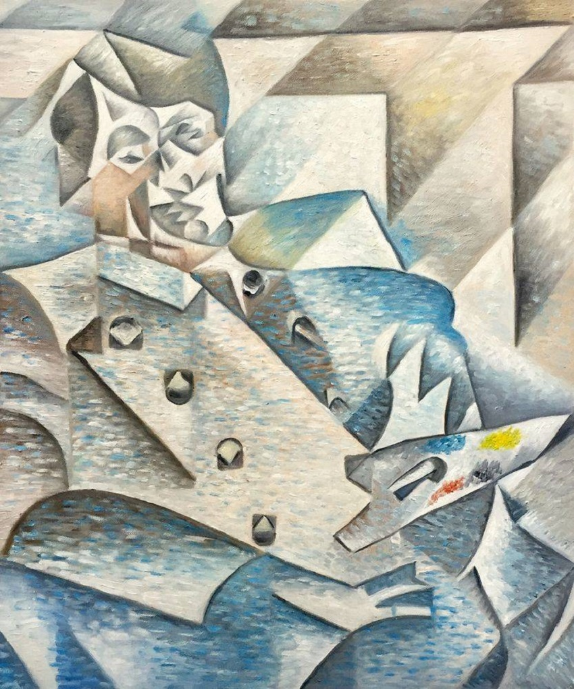
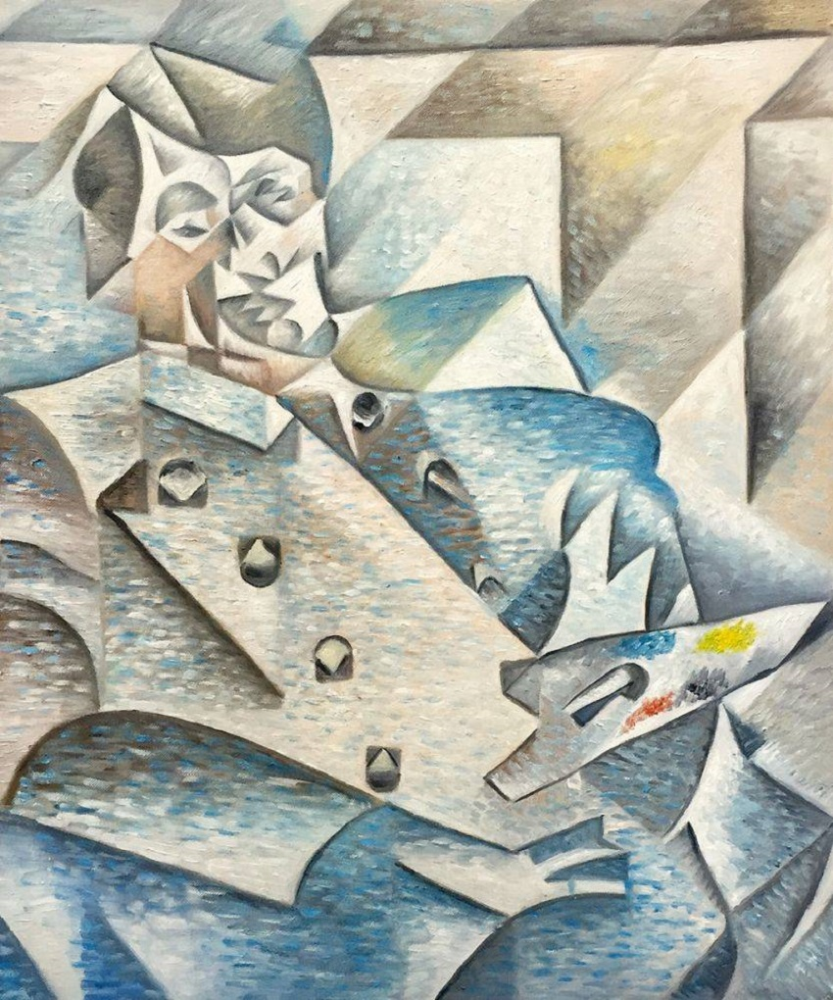
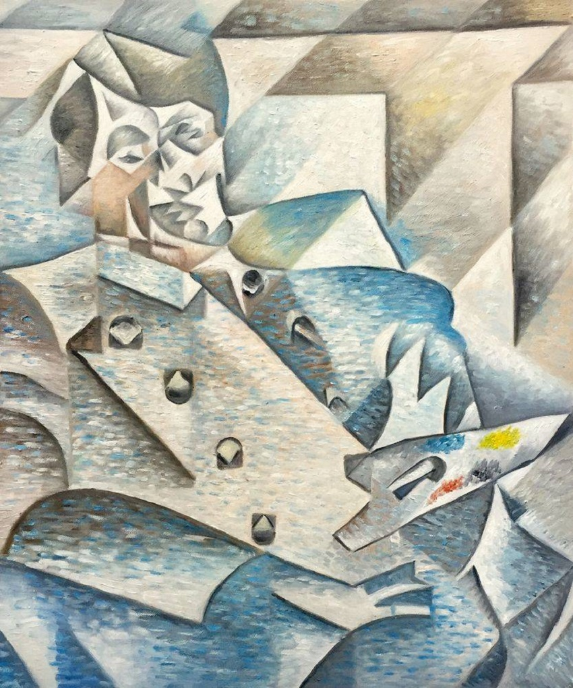

Кубизм
Геометризация формы, множественные ракурсы и аналитический подход.
Знаковые мастера
- Пабло Пикассо
- Жорж Брак
- Хуан Грис

 

Геометризация формы, множественные ракурсы и аналитический подход.

Подсознание, сновидческие образы и соединение несочетаемого.
Поиск новых форм выражения, отказ от традиционных канонов.
Идея и контекст важнее визуальной формы произведения.